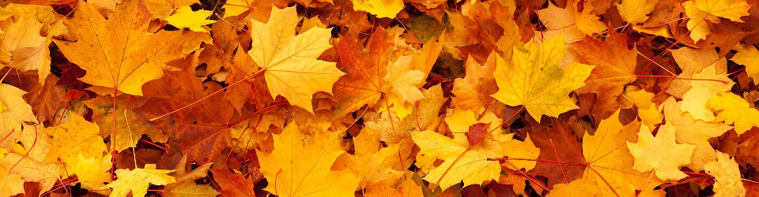
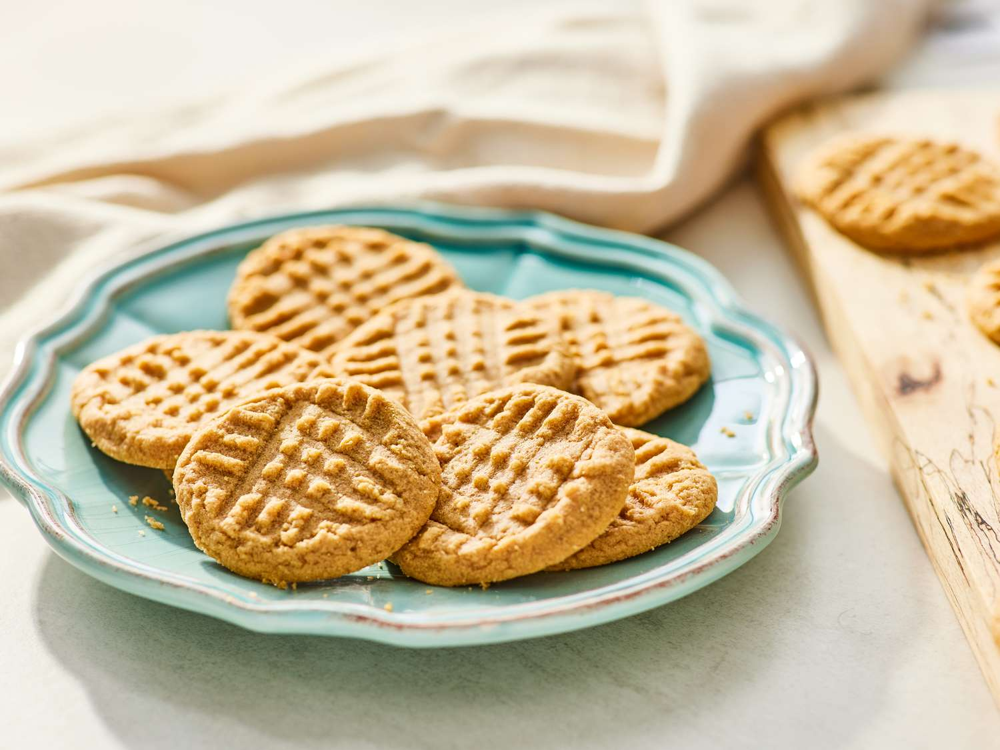
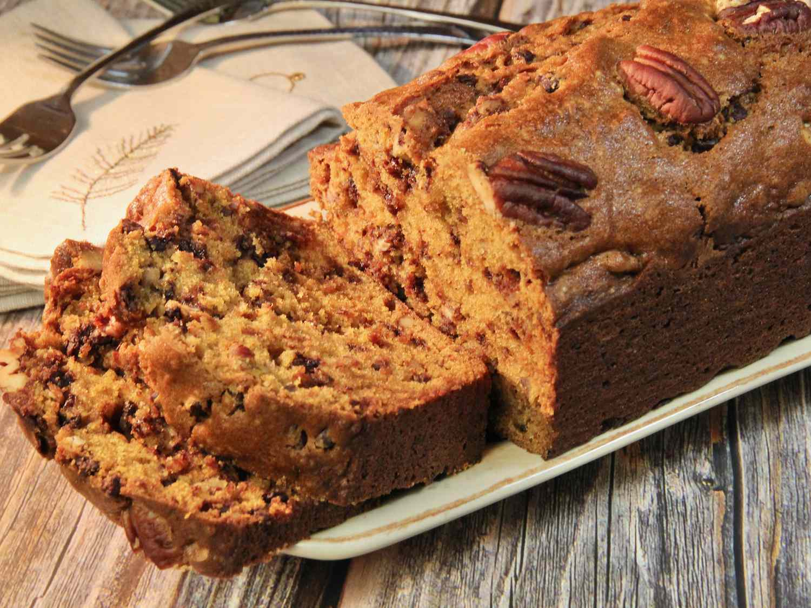

Holiday Recipes
Butternut Squash Feta Soup
Ingredients
- 3 cups butternut squash, peeled and cubed
- 1 large sweet onion, cut into wedges
- 1 sprig fresh sage
- 1 sprig fresh rosemary
- 1 sprig fresh thyme
- Kosher salt
- Freshly cracked black pepper to taste
- 1 whole garlic head, cut in half lengthwise
- 1 6-ounce feta block
- 3 tablespoons extra virgin olive oil
- 4 cups vegetable broth, or chicken broth
Instructions
- Preheat the oven to 400°F
- Combine butternut squash, onion, sage, rosemary and thyme in a large baking dish & toss with 2½ tablespoons olive oil, ½ teaspoon salt & fresh cracked black pepper
- Nestle each half of the garlic head into the vegetables, cut side down
- Create a hole in the center and place feta block, drizzle with remaining olive oil
- Roast until squash is tender and feta is caramelized, about 30-35 minutes
- Remove herbs and squeeze out roasted garlic
- Transfer vegetables and cheese to the blender; add broth and blend until smooth
- Warm on the stove when ready to serve
Peanut Butter Cookies

Ingredients
- 1 1/2 cup all-purpose flour
- 1/2 cup butter unsalted
- 1 cup peanut butter
- 1/2 cup brown sugar
- 1/2 cup sugar
- 1 tsp vanilla extract
- 1 large egg
- 3/4 tsp baking powder
Instructions
- Preheat over to 350F
- Sift flour and baking powder together then whisk to combine
- Cream butter and sugars in a stand mixer fitted with a paddle attachment
- You can add an optional 1/4-1/2 tsp sea salt
- Add peanut butter and mix until incorporated
- Mix in egg and vanilla extract then add flour mixture and beat until incorporated
- Roll dough into one inch balls and place on baking sheet lined with parchment paper
- Flatten cookies with a fork in a criss-cross pattern
- Bake cookies for about 10 minutes
- Allow cookies to cool completely on baking sheet, they need to set up before being transferred
Pecan Pumpkin Loaf

Ingredients
- 1 1/2 cups all purpose flour
- 1/2 teaspoon salt
- 1/2 teaspoon baking soda
- 1/2 teaspoon baking powder
- 5 1/2 teaspoons pumpkin spice
- 2/3 cup sugar
- 2/3 cup brown sugar
- 1/4 cup milk
- 3 large egg whites
- 2/3 cups canned pumpkin puree
- 1 cup pecans, roughly chopped
Instructions
- Preheat your oven to 350 degrees F
- Lightly spray a loaf pan with non-stick cooking spray and if you prefer, line the pan with parchment paper
- Set aside
- In a medium bowl, whisk together the flour, pumpkin spice, salt, baking soda, and baking powder
- In a large bowl, beat the sugar, brown sugar, milk, and egg whites until well blended
- Add the pumpkin puree and incorporate it into the mixture
- Add the dry ingredients to the wet ingredients and fold together using a spatula
- Finally, fold in the pecans
- Pour the batter into the loaf pan and tap the pan firmly on the countertop to settle the batter into the pan and to eliminate bubbles
- Bake for 55 minutes
- Allow the loaf to cool for 5 minutes in the loaf pan before removing to a wire cooling rack to completely cool